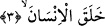
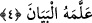

Allah Âdem (a.s.)’a isimleri öğretti. Onu öğrenmekte başarılı kıldı ve öğrenmesini
lütfuyla kolaylaştırdı. Dâvûd (a.s.)’a zırh yapmayı öğretti. Nitekim, “Ona savaş
sıkıntılarınızdan sizi koruması için zırh yapmayı öğretti.” (el-Enbiyâ’, 21/80)
buyurmuştur. İsâ (a.s.) hakkında; “Allah ona yazmayı, hikmeti.. öğretecek” (Âl-i
İmrân, 3/48) buyurduğu gibi, tıbbı da öğretti. Hızır (a.s.) hakkında: “Ona katımızdan
bir rahmet (vahiy ve peygamberlik) vermiş, yine ona tarafımızdan bir ilim
öğretmiştik” (el-Kehf, 18/65) buyurduğu gibi “ledün ilmi”ni öğretti. Bizim
Peygamberimiz (s.a.)’e de “Allah sana Kitabı ve hikmeti indirmiş ve sana
bilmediğini öğretmiştir” (en-Nisâ’, 4/113) âyet-i kerîmesinde buyurduğu gibi Kur’ân’ı
ve ülûhiyetin esrârını öğretmiştir.
Fethü’r-rahmân adlı eserde şöyle denilmiştir: Kur’ân’nın mahluk, yaratılmış
olmadığının delillerinden biri de şudur. Allah Teâlâ Kur’an adını elli dört yerde zikr
etmiştir. Hiç birinde onun yaratılmış olduğuna dâir bir halk, yaratma sözcüğü veya bir
işâret mevcut değildir. İnsanı ise onsekiz yerde zikr etmiştir. Bu âyetlerden her biri onun
yaratılmış olduğunu göstermektedir. Bu sûrede insan ve Kur’an aynı şekilde yanyana
getirilmiştir. Bunu Ebu’s-Suûd söylemiştir.
3. İnsanı yarattı.
Öğreticinin kim, öğretme işinin nasıl yapıldığını açıklamak için “insanı yarattı”
buyurdu. Ona açıklamayı, meramını anlatmayı öğretti. İnsanı yaratmaktan maksad, onun
sâhip olduğu görünen ve görünmeyen bütün kuvvet ve kabiliyetleridir.
4. Ona açıklamayı öğretti.
“Beyân”, insanın kalbinde gizli olanı dil ile açıklamaktır.
Râğıb demiştir ki: “Beyân, bir şeyin üzerinde bulunan örtüyü açmak”tır. Konuşmaktan
daha geneldir. Çünkü konuşma, yalnız insana mahsus bir özelliktir. Kelam da kasd
edilen mânânın üzerindeki kapalılığı açıp ortaya çıkardığı için “beyân” ismi ile
isimlendirilmiştir. İnsana beyânın öğretilmesinden maksad, yalnız kendisini açıklayıp
anlatabilme imkânı verilmesinden ibaret olmayıp, hem kendi derdini anlatabilme, hem
de aynı zamanda başkasının beyânını anlama kabiliyeti verilmesidir. Çünkü Kur’ân’ı
öğretme görevi ve sorumluluğu ona verilmiştir. Âyet-i kerîme’de geçen “insan”la, bütün
sınıflarına ve ferdlerine şâmil insan cinsi kasdedilmiştir.
Bahru’l-ulûm’da, bu âyet-i kerîmeden şu anlaşılır, denmiştir: “İnsanı yarattı”; yani,